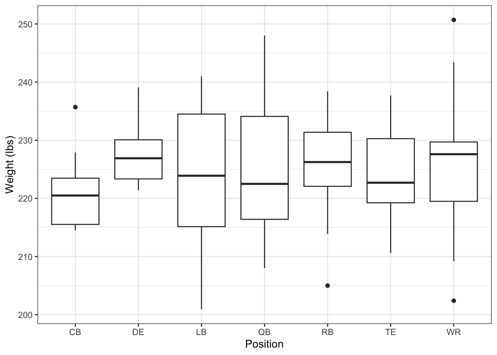

here() starts at /Users/sandi/MADA-course/emmahardinparker-MADA-portfolio
Below I am setting a seed for the sake of reproducibility, as well as defining the number of players I intend to create data for.
#Setting a seed for reproducibility set.seed(129)#Defining the number of observations (100 players)n_players <-100
Below I am creating the actual data frame. I have decided to create an ID variable for each player that is numbered 1-100. I set the age variable to have a min of 22 and a max of 33. I originally tried to set the age variable using round & rnorm, but found that some players were listed as being as young as 16 and as old as 50. To avoid this, I set the minimum and maximum to roughly relate to the ages of most active NFL players. For the position variable, I decided to include both offensive and defensive players, however, I am very much aware that some randomized relational data points (forty_time & position) may result in ridiculous results. I set the height variable in centimeters and the weight variable in pounds. If needed for future analyses, I may convert the height variable into inches. I also got a quick look at the data using the head() function to briefly view the first five rows. I also took a deeper look after using the head() function to get some summary statistics of the data using both the summary() and glimpse() functions
#Creating an empty data frame with placeholders for variables syn_data <-data.frame(ID =numeric(n_players),Age =numeric(n_players),Position =character(n_players),Forty_Time =numeric(n_players),Height =numeric(n_players),Weight =numeric(n_players))# Defining individual variables syn_data$ID <-1:n_playerssyn_data$Age <-round(runif(n_players, min =22, max =33), 1)syn_data$Position <- purrr::map_chr(sample(c("QB", "RB", "WR", "DE", "CB", "LB", "TE"), n_players, replace =TRUE), as.character)syn_data$Forty_Time <-runif(n_players, min =4.2, max =5.0)syn_data$Height <-round(runif(n_players, min =177.8, max =198.12), 1)syn_data$Weight <-round(rnorm(n_players, mean =225, sd =10), 1)# Viewing first 5 observations head(syn_data, 5)
ID Age Position Forty_Time Height Weight
1 1 23.4 WR 4.840918 198.0 227.4
2 2 25.5 TE 4.357144 195.3 218.9
3 3 23.8 RB 4.550497 178.2 221.3
4 4 25.4 CB 4.476869 195.4 235.7
5 5 22.9 TE 4.722912 181.5 223.1
## Taking a look at the generated data summary(syn_data)
ID Age Position Forty_Time
Min. : 1.00 Min. :22.00 Length:100 Min. :4.211
1st Qu.: 25.75 1st Qu.:24.85 Class :character 1st Qu.:4.392
Median : 50.50 Median :27.10 Mode :character Median :4.597
Mean : 50.50 Mean :27.21 Mean :4.593
3rd Qu.: 75.25 3rd Qu.:29.80 3rd Qu.:4.786
Max. :100.00 Max. :32.80 Max. :4.983
Height Weight
Min. :178.1 Min. :200.9
1st Qu.:183.7 1st Qu.:218.5
Median :189.2 Median :224.8
Mean :188.9 Mean :224.9
3rd Qu.:194.6 3rd Qu.:231.7
Max. :198.1 Max. :250.7
After getting a quick look at the data ad seeing that it turned out the way I intended, I am now going to save the data as a CSV file into the data-exercise folder.
##Saving synthetic data into CSV file within the data-exercise folder in repository write.csv(syn_data, here("data-exercise", "syn_data.csv"), row.names =FALSE)
I am now going to start generating some plots to further explore the data.
##Boxplot of Forty Times grouped by Position ggplot(syn_data, aes(x = Position, y = Forty_Time)) +geom_boxplot() +labs(x ="Position", y ="Time in the Forty Yard Dash") +theme_bw()
From the plot above, we can see that Defensive Ends (DE) have the slowest forty-yard-dash time, on average, compared to the rest of the positions. This would be expected in real life as DEs are typically the largest players on the field and rarely can run at the same speed as skill position players. The top 3 fastest positions on average are cornerbacks (CB), quarterbacks (QB), and linebackers (LB). Though we would expect wide receivers (WR) and running backs (RB) to be among the fastest, this plot does not skew from what we would expect too severely.
## Boxplot of Weight by Position ggplot(syn_data, aes(x = Position, y = Weight)) +geom_boxplot() +labs(x ="Position", y ="Weight (lbs)") +theme_bw()

This plot shows the issues with randomized synthetic data. Per the NFL, defensive lineman average at 6’3” and 310 pounds. I would have to go into more depth data generation to ensure that associations are correct based off of real-life scenarios. For example, men are on average taller than women, and if the data were not structured correctly, the distribution of height between men and women would be correct. Creating this plot was a teaching moment and moving forward I need to be more careful when creating data like this.
Now that I know that position and weight will not yield any accurate association, I am going to create one more plot of position and height to see if that association is more realistic.
ggplot(syn_data, aes(x = Position, y = Height)) +geom_boxplot() +labs(x ="Position", y ="Height (cm)") +theme_bw()
The original plot I created (not shown) did not generate the results I was looking for.I initially tried to use the rnorm() function to grab the mean, however, the last time I checked, there is not a 7’ tall linebacker in the NFL. To fix this, I went back to the variable definition code and changed rnorm() to runif() and set the min and max to 5’10” and 6’6”, respectively. As previously stated, the average height of a DE is 6’3”. Here, the average DE is around 6’1”. This plot now looks pretty decent, considering the small sample size (n = 100), To my surprise, this plot contains three outliers. Since this is my first time generating synthetic data, I was under the impression that randomly created fake data would not produce any true outliers.
Now that I have created three exploratory plots, I am now going to fit some models to see if there are any statistically significant associations in the data. I am electing not to use position & weight, as the plot above shows clearly that the data was not created to be robust to real-life differences in association.
## Fitting model between position and forty_time syn_fit1 <-lm(Forty_Time ~ Position, data = syn_data)summary(syn_fit1)
Call:
lm(formula = Forty_Time ~ Position, data = syn_data)
Residuals:
Min 1Q Median 3Q Max
-0.48826 -0.20019 0.01398 0.18668 0.45853
Coefficients:
Estimate Std. Error t value Pr(>|t|)
(Intercept) 4.58537 0.07302 62.792 <2e-16 ***
PositionDE -0.06399 0.09888 -0.647 0.519
PositionLB 0.11360 0.09309 1.220 0.225
PositionQB -0.08087 0.09713 -0.833 0.407
PositionRB 0.01360 0.09561 0.142 0.887
PositionTE -0.02846 0.09561 -0.298 0.767
PositionWR 0.04452 0.08872 0.502 0.617
---
Signif. codes: 0 '***' 0.001 '**' 0.01 '*' 0.05 '.' 0.1 ' ' 1
Residual standard error: 0.2309 on 93 degrees of freedom
Multiple R-squared: 0.07307, Adjusted R-squared: 0.01326
F-statistic: 1.222 on 6 and 93 DF, p-value: 0.3022
From this summary table we can see that the association between the dependent variable (forty time) and independent variable (position) is not statistically significant. The residual median is close to zero, indicating that there there may be little variation in our residuals. This also indicates that our residuals would be somewhat symmetrical and would predict correctly on both high and low ends of a q-q plot. However, the multiple r-squared value of 0.0527 says that the position explains only 5.27% of the variation in forty yard dash time. Finally, the p-value sits slightly over our typical 0.05 threshold, which would indicate there is no strong evidence that associates position and forty yard dash time.
# Creating second fit modelsyn_fit2 <-lm(Height ~ Position, data = syn_data)summary(syn_fit2)
Call:
lm(formula = Height ~ Position, data = syn_data)
Residuals:
Min 1Q Median 3Q Max
-12.544 -5.431 0.285 4.931 11.114
Coefficients:
Estimate Std. Error t value Pr(>|t|)
(Intercept) 189.9300 1.9156 99.147 <2e-16 ***
PositionDE -3.8217 2.5938 -1.473 0.144
PositionLB 1.7137 2.4420 0.702 0.485
PositionQB 0.1623 2.5480 0.064 0.949
PositionRB -3.0443 2.5082 -1.214 0.228
PositionTE -1.3514 2.5082 -0.539 0.591
PositionWR -1.4300 2.3275 -0.614 0.540
---
Signif. codes: 0 '***' 0.001 '**' 0.01 '*' 0.05 '.' 0.1 ' ' 1
Residual standard error: 6.058 on 93 degrees of freedom
Multiple R-squared: 0.0819, Adjusted R-squared: 0.02267
F-statistic: 1.383 on 6 and 93 DF, p-value: 0.2298
This model suggests that there is not a statistically significant association between height and position. If we look at the multiple R-squared value alone we can see that position only explains 2.92% of the variation of height. Also, the p-value sits at 0.8, which is significantly higher than the typical 95% alpha = 0.05 level.